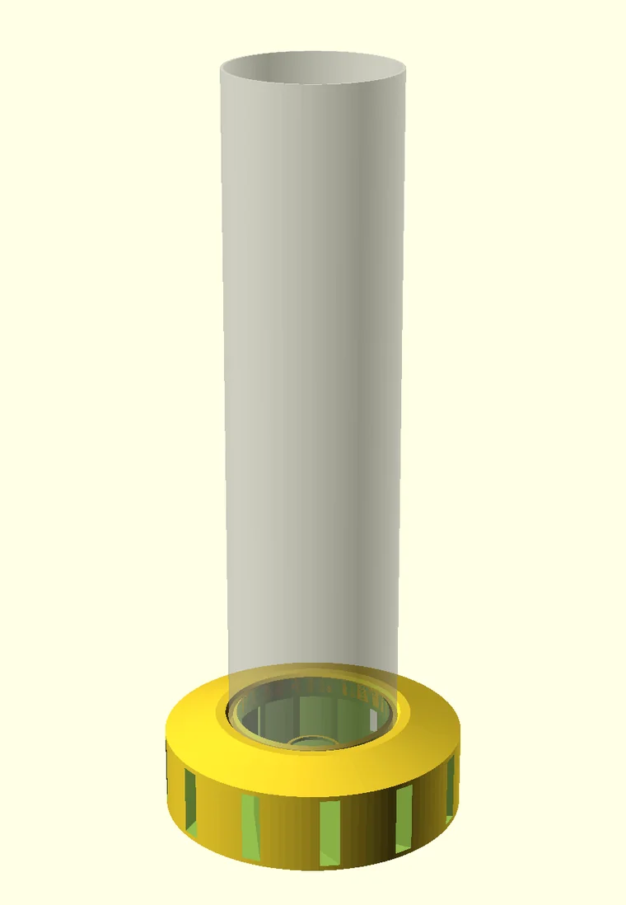
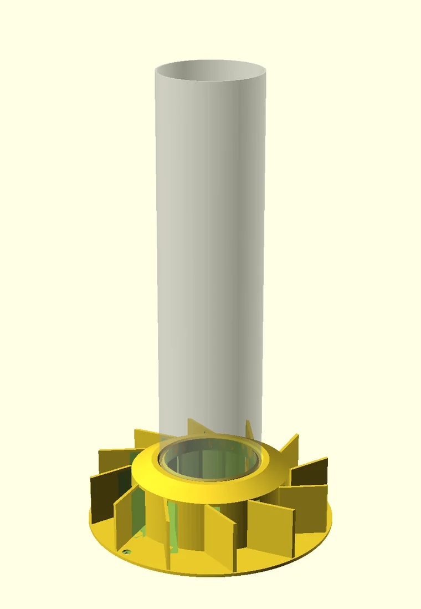
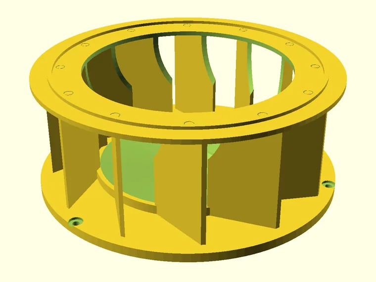
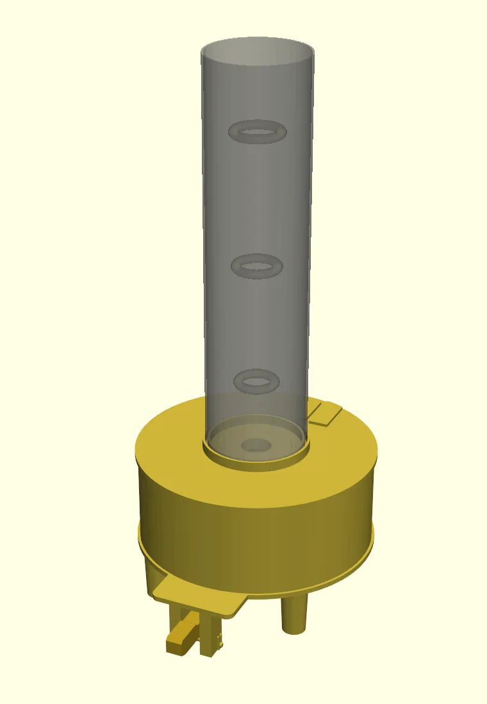

The Spiral Instruments
Four desktop instruments, printed in PETG and raised around a clear tube of a hundred millimetres, whose single purpose is to persuade air to reveal itself. The first stands a helix of incense smoke by heat alone; the second does the same work with harvested wind; the third teaches a spoonful of powdered earth to rise and dance; the fourth rolls the smoke into rings and sends them up the tube at the press of a key. The first three are children of one law: converging flow must spin faster, because angular momentum, once granted, is conserved. The fourth is its sibling: circulation shed from a sharp edge stays bound to the air that carries it (Kelvin's theorem), so a puff can travel as a closed, self-propelled ring. As on every page of this site, the physics below is computed live and the interpretation is labeled — you can always tell which register a claim belongs to.
The standing helix measured — simulated live
A particle simulation of the smoke column, advected by a Rankine vortex: solid-body rotation inside the core, free-vortex spin-up (v·r = constant) outside it, riding the axial draft. Switch instruments, give the hearth a puff, or feed the wind edition a breeze. The swirl is clockwise seen from above — the slots only know one handedness.
Of vortices in general measured
Two ideal forms bracket every real whirl. In the forced vortex the fluid turns as a rigid body and must be continuously driven; in the free vortex, conservation of angular momentum sets v·r = constant, so fluid drifting inward is compelled to accelerate. A real confined column is a Rankine vortex — free outside, forced inside a viscous core. Air enters this build through twelve chord-cut slots at 68° from radial (drag the slider), spirals from the 45.5 mm chamber wall to a core of a few millimetres, and arrives spinning roughly seven times faster.
Two more measured ingredients complete the picture. Even a small rotational bias — an offset inlet, a wall texture, asymmetric heating — is enough for a buoyant column to organize into a corkscrew: laboratory work on buoyancy-induced columnar vortices describes the coupled system as a spiraling boundary layer feeding a thermally driven vertical core, wrapped in a helical shear layer. This build simply makes the bias deliberate — twelve slots' worth. And buoyancy itself intensifies the spin: as the rising flow stretches the vortex vertically, conservation of angular momentum narrows and quickens the core — the same mechanism that turns a bonfire into a fire whirl. What the instrument really sells is visibility: a normally invisible flow field, traced live by the smoke that rides it.
The rolling torus measured — computed live
Instrument IV makes the other kind of vortex. There is no swirl about the tube's axis at all: vorticity shed from a sharp edge rolls up into a closed loop, a vortex ring, which carries its own circulation and so propels itself — the way a smoke ring crosses a room. A piano-key lever pushes a latex membrane up into a sealed smoke chamber, and the displaced slug of smoky air leaves a sharp-edged orifice under the tube and rolls up. Pick the orifice insert, how far and how fast you press, and fire.
The arithmetic behind the readouts. The membrane annulus between the Ø80 pusher and the Ø110 clamp displaces 7.15 mL per millimetre of travel; divided by the orifice area, that is a slug of length L. Clean rings want L/D between about 1 and 4 — past L/D ≈ 4, the formation number found by Gharib, Rambod and Shariff, the ring stops taking on circulation and the rest of the slug trails behind it as a jet. The slug model gives the ring's circulation, Γ ≈ ½UL; the Kelvin–Saffman formula turns that into speed, U = Γ/4πR · (ln 8R/a − 0.56), for a ring of radius R ≈ 0.6D with a fat core (a ≈ 0.4R). And the tube takes its share: a ring near a wall is slowed by its mirror image, which costs the 36 mm ring about 13 % in this 96 mm bore and the 48 mm ring over a quarter — the reason the inserts stop at Ø40.
The four instruments measured — I–III as built, IV as drawn

I · The Hearth Tornado
A chimney taught to spin. The incense cone's few watts drive a stack-effect draft (ΔP = ρgH·ΔT/T ≈ 0.6 Pa for the 394 mm tube — feeble, but free); make-up air can reach the plume only through the twelve tangential slots. A 9 mm mouthpiece bore feeds one slot: breath becomes swirl, and the column visibly tightens at a puff.
indoors, still air · ~440 mm tall

II · The Wind Tornado
Outdoors the budget improves by an order of magnitude: ram pressure of a 3 m/s breeze is ~5.4 Pa, some nine times the hearth draft. Twelve tall stator fins form converging funnels from any compass direction (~4:1 contraction) and discharge through the same 68° chords — all weather translated into the one clockwise currency. The crown is open; in a calm it degrades gracefully into its indoor cousin.
fair weather (no rain hat) · ~445 mm tall

III · The Dust-Devil Plate
No tube at all: an open arena whose twelve-fin crown turns ambient wind into tangential jets over a saucer of zinc-stearate tracer powder. The core's pressure minimum lifts the powder into brief, dancing dust whirls — bursts that wander, die, and re-form. Honest expectations: intermittent by design; a free devil, not a captive one.
steady 2–5 m/s breeze · sun-warmed dark floor helps

IV · The Rolling Torus
No swirl at all — the other vortex. A piano-key lever pushes a balloon membrane up into a sealed smoke chamber; 86 mL of smoky air leaves a sharp-edged orifice and rolls up into a ring that climbs the tube and floats out of the open crown. Four round drop-in orifices, Ø25–40 mm; the Ø30 gives the formation stroke, L/D ≈ 4, at full press. Seven shaped mouths fit the same socket (triangle, square, ellipse, slot, twin bore, pentagram, hexagram) for rings born with corners; each wants a shorter press, given in the guide. No electronics: a glove-film flap lying on a floor grille refills the chamber, and the cone is lit through a hinged hatch.
drawn and CAD-verified 2026-10 — not yet lit · ~541 mm tall
The hermetic reading interpretation — not physics
The treatise describes each instrument twice and never merges the voices. The second voice makes no claim upon the first: equations do not require blessing, and axioms do not require proof. They are two lanterns held to one whirlwind.
The equations that govern a smoke-helix in a tube of 100 millimetres govern likewise the dust devil on the plate, the waterspout, the hurricane, and, in their gravitational translation, the spiral galaxy. Scale falls away in the dimensionless numbers — Reynolds, swirl — which are the algebra of correspondence: shrink the heavens to a desk and the form survives.
Vibration (Instrument I): what appears a fixed and patient form — a rope of smoke holding its place — is motion all the way through; the shape persists only because movement is continuously supplied. Polarity and Rhythm (Instrument II): the crowding of air on the windward fins and its thinning in the leeward wake are one wind differing only in degree; the drum stands between the poles and mints their difference into rotation. The gust and the lull, the bursting and regathering of the core, are the pendulum made visible in smoke — the vortex does not fail when it breaks; it keeps time.
Gender (Instrument IV): the generative principle — every creation asks a receptive pole and a projective one. The sealed chamber receives and holds the smoke; the press projects; between them a form is born that neither contains, a ring that carries itself away. It is the only instrument whose vortex leaves its maker: the Moon as mother, where the Sun stood as father.
The reading of ascension interpretation — not physics
A helical smoke vortex can be read as a compelling symbol of ascension: something dense and earthbound becomes heat-activated, rises, and organizes into a spiral rather than simply moving straight upward. In sacred-geometry language it presents a living image of transformation through cyclical motion, polarity, and upward movement — and that meaning is interpretive, not a claim that the vortex proves a metaphysical mechanism.
| Observed feature | Sacred-geometric interpretation | Experiential meaning |
|---|---|---|
| Central axis of the tube | The axis mundi — a world axis linking lower and higher realms | A stable inner center or witnessing awareness |
| Upward motion | Ascension from dense/material to subtle/expanded states | Transformation, refinement, uplift |
| Spiral path | The spiral as growth through return rather than repetition | You revisit patterns, but at a changed level |
| Rotational circulation | Cycles of dissolution and renewal around a stable center | Integration rather than escape from embodiment |
| Expanding / contracting coils | Breath, pulse, and alternating concentration and expansion | Growth proceeds rhythmically, not linearly |
| Double helix, paired strands | Polarity in dynamic union — earth/sky, receptive/active, matter/spirit | Opposites become a generative braid rather than a conflict |
| Rolling ring (Instrument IV) | The ouroboros — a closed circulation turning through itself | A form that moves because it turns, and holds together because it moves |
The core symbolic idea: ascension is not pictured as a straight line. It is a spiral ascent — every rotation returns near a familiar direction, yet the flow has advanced upward. This is why spiral forms recur in spiritual art, processional paths, labyrinths, coiled-serpent imagery, and contemplative symbolism; popular sacred-geometry writing commonly associates the spiral with movement between earthly and transcendent domains, the development of consciousness, and the relation of part to whole.
Why the double helix feels potent
The simulation above draws what the built instrument sometimes shows: two strands of smoke that remain distinct while sharing one axis and one upward direction. When the column stands as a double helix, the symbol grows richer. You might contemplate it as:
- Duality becoming coherence. The two strands never merge into one indistinguishable line; their relationship creates the larger form.
- Alternation and balance. One strand comes forward while the other recedes, then they exchange places — breathing, day and night, contraction and expansion, action and receptivity.
- Embodiment and transcendence. A double spiral can represent material life and inner awareness rising together, rather than a body to be discarded.
- A living ladder. Unlike a rigid ladder, the helix rises by circling — an ascent made through rhythm, recurrence, and adaptation.
The ladder image is particularly apt. Each turn crosses the visual field at a new height, so the smoke makes an ascending sequence of thresholds — and in symbolic language those crossings can be contemplated as integrations: fear into discernment, fragmentation into relationship, raw sensation into conscious attention.
A grounded way to use it
Treat the experiment as a contemplative instrument, not as evidence for a specific cosmology:
- Set a single intention — such as “what pattern am I ready to revisit at a higher level?”
- Watch the centerline first, not the smoke. Notice the still axis around which the apparent complexity organizes.
- Follow one strand from bottom to top. Observe how it repeats its circular relationship while never occupying exactly the same place.
- If a second strand appears, notice where the pair separates, converges visually, and trades positions.
- Record the conditions that produce each form — tube temperature, airflow, burn rate, room drafts — so the physical and the symbolic inquiries remain connected.
The build record measured
| Fact | Value |
|---|---|
| Common standard | 100 mm OD × 2 mm wall clear acrylic tube, 15.5″ (393.7 mm) |
| Swirl generator (I–III) | 12 chord slots, 10 × 41 mm (wind: × 47), tangent entry 68° from radial |
| Slot / bore area | 0.76 (wind: 0.87) — held above the ~0.6 choke ratio |
| Chamber → core | r = 45.5 mm → ≈ 6 mm; free-vortex spin-up ≈ ×7 |
| Ring generator (IV) | Ø110 latex membrane, Ø80 pusher, 12 mm full stroke = 86 mL; orifice inserts Ø25 / 30 / 35 / 40 with square exit edges and 6 mm bellmouth inlets, plus seven shaped inserts of equal area (Ø25- or Ø30-equivalent) with 45° chamfered inlets, same Ø70 flange; piano-key lever that lands on a stop pin at full stroke; chamber sealed against the cone's draft, refilled through a glove-film flap on a floor grille |
| Handedness | clockwise viewed from above, every swirl instrument (I–III); the ring (IV) has no swirl, only its poloidal roll |
| Sources | incense_vortex.scad · incense_vortex_wind.scad · vortex_dust_plate.scad — OpenSCAD 2021.01 · vortex_ring_base.py — build123d 0.11, lever clearances checked through the stroke · orifice_sigil.py — the shaped inserts; every mesh verified watertight and two-manifold; the STLs above are the exact validated exports |
| Field status | Instrument I built and lit, 2026-08: standing spiral wave on first assembly; exit cowls removed after testing. Instrument IV drawn and CAD-verified 2026-10-16, revised after a geometry review the same day; shaped inserts added 2026-10-19; not yet printed or lit |
| Treatise | The Spiral Instruments (PDF) — the folio of instruments I–III, both voices |
Safety, plainly: the ember is hotter than the vessel — PETG softens near 80 °C and the metal heat-shield disc under the cone is not optional. Never leave a burning cone unattended.